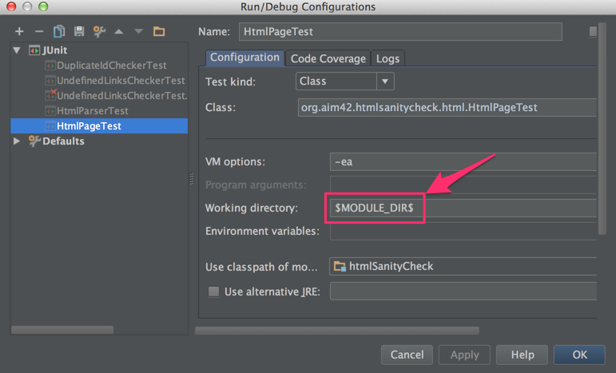

Development Docs
Prerequisites
Prerequisites for Gradle Plugin Development
You should definitely read the original [Gradle User Guide] on custom plugin development.
Adding New Checks
To add new checks you have to subclass from 'org.aim42.htmlsanitycheck.check.Checker' and implement the 'performCheck' method - which requires an 'HtmlPage' instance as parameter.
Don’t forget to: * write a test or spec for your checker - the code in 'test/groovy/org.aim42.htmlsanitycheck.check' gives many examples * add your checker class to the 'public static AllCheckers' list (Set, to be precise) of available checkers. This set is used to configure the 'AllChecksRunner' class.
Directory Structure and Required Files
|-htmlSanityCheck | |-src | | |-main | | | |-org | | | | |-aim42 | | | | | |-htmlsanitycheck | | | | | | | ... | | | | | | |-HtmlSanityCheckPlugin.groovy (1) | | | | | | |-HtmlSanityCheckTask.groovy | | | |-resources | | | | |-META-INF (2) | | | | | |-gradle-plugins | | | | | | |-htmlSanityCheck.properties (3) | | |-test | | | |-org | | | | |-aim42 | | | | | |-htmlsanitycheck | | | | | | | ... | | | | | | |-HtmlSanityCheckPluginTest |
| 1 | the actual plugin code, a xyzPlugin and xyzTask groovy files |
| 2 | Gradle expects plugin properties in META-INF |
| 3 | Property file containing the name of the actual implementation class:
implementation-class=org.aim42.htmlsanitycheck.HtmlSanityCheckPlugin |
Notes for IntelliJ Users
If you work with IntelliJ, you should configure your run- and test configurations so that the working-directory is set to your current module - most easily done by making $MODULE_DIR$ your default.

Building the Plugin
Uploading / Publishing to Maven Central and Bintray
t.b.c.
Uploading to Gradle Plugin Repository
Currently we use the Gradle Plugin Repository to host the plugin - which is very simple to configure for users.
Design Discussions
Automated Checker Factory
Issue 185 proposes to automatically detect and instantiate Checker (sub-)classes.
Problem
We want to adhere to the Open-Close principle (OCP) when adding new checkers:
There shall be no need to touch other code when writing a new checker, especially should there be no central registry of checkers.
Up to v 1.0.0-RC-1 we violated the OCP and allowed major redundancies in code:
class AllCheckers {
public final static LinkedHashSet<Class> checkerClazzes =
[BrokenCrossReferencesChecker,
BrokenHttpLinksChecker,
DuplicateIdChecker,
ImageMapChecker,
MissingAltInImageTagsChecker,
MissingImageFilesChecker,
MissingLocalResourcesChecker].toSet()
}Solution Approach
A solution needs to address two issues:
1.) find all Checker subclasses One approach here relies on Java annotations, described by Przemysław Wojnowski, and uses the Reflections library.
2.) instantiate these classes (aka Factory for the checkers)
Refactoring the Main Checking Loop
Issue 190 proposes to merge the two classes AllChecksRunner and ChecksRunner.